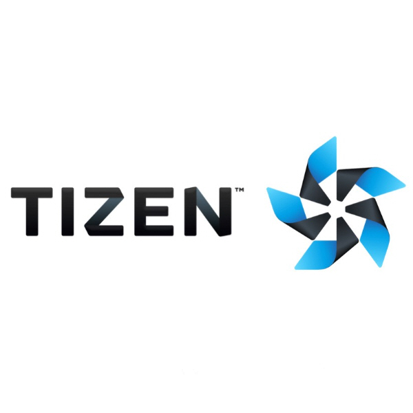

Qi Zhao
88 Harbour St, Toronto, ON · (416)-666-0743 ·
steve-qi.zhao@outlook.com
I am a Software Developer at SOTI Inc.
Education
University of Toronto
Master of Science in Applied Computing (MScAC)
Completed all courses with excellent grades.
Took 8-month internship at SOTI and completed porting of Tizen system project from scratch.
September 2018 - December 2019
Xi'an Jiaotong University (China)
Bachelor of Engineering (BEng)
Department of Computer Science and Technology, School of Electronic and Information Engineering
GPA: 3.58 / Average Score: 86.55
September 2014 - June 2018
National Taiwan University of Science and Technology (Taiwan)
Student Exchange Program
Department of Computer Science and Information Engineering, College of Electrical and Computer Engineering
GPA: 4.07
September 2016 - January 2017
Experience
Teaching Assistant
University of Toronto, Toronto, Canada
September 2018 – December 2019
IT Consultant Intern
Sichuan Communication Design, China Comservice, Chengdu, China
July 2017 - October 2017
Projects
Course Projects, University of Toronto, Canada
SMPE: Stock Market Prediction on Edge, Edge Computing
September 2018 - December 2018
Vehicle Collision Analysis in Toronto, Data Science and Analytics
September 2018 - December 2018
YLAB Wireless Network and Network Security Lab, Xi’an Jiaotong University, China
Dynamic Guidance Decision Algorithm in Intelligent Transportation Systems
October 2017 - May 2018
Wi-Fi Selector for Android Devices
March 2017 - July 2017
Skills
Programming Languages & Tools
-

-

-

-

-

-

- 
Databases
Other Skills & Knowledge
- Git, Jenkins, GoCD
- Jira, Kanban
Awards & Honors
- Mitacs Accelerate in Dec 2019 - Mitacs, Canada
- China National Scholarship in 2017 - Ministry of Education of the P.R. China
- Meritorious Winner of Mathematical Contest in Modeling (MCM/ICM) in 2017 - COMAP, United States